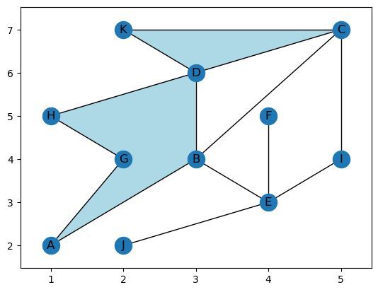
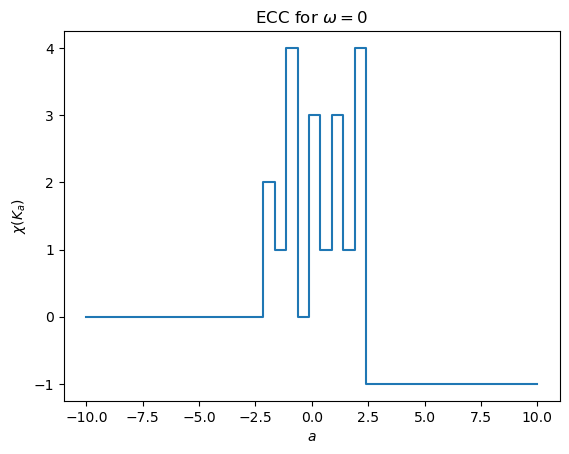
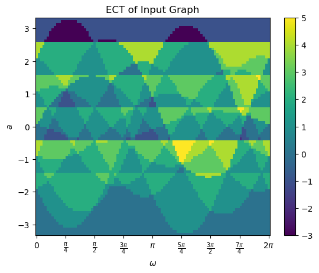
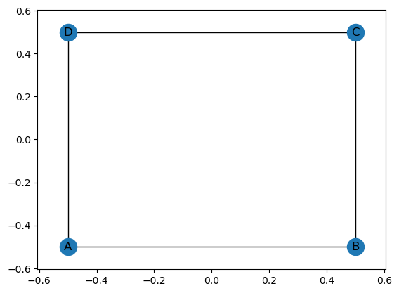
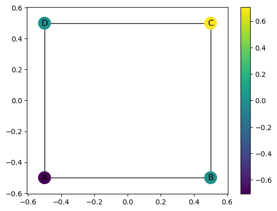
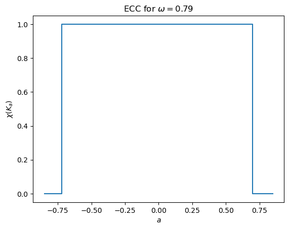
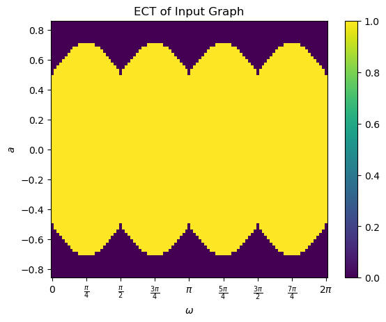
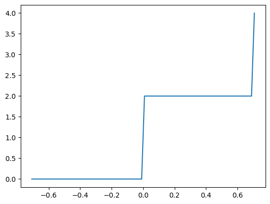
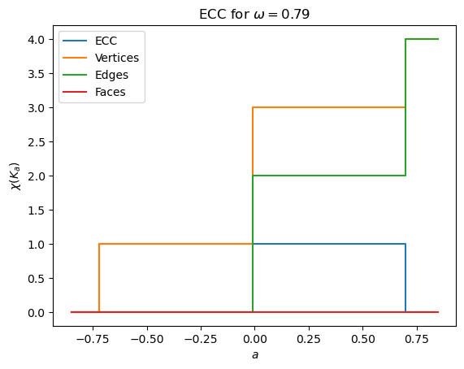

[1]:
!pip install .
Processing /Users/liz/Library/CloudStorage/Dropbox/Math/Code/ect
Installing build dependencies ... done
Getting requirements to build wheel ... done
Installing backend dependencies ... done
Preparing metadata (pyproject.toml) ... done
Requirement already satisfied: numpy in /Users/liz/anaconda3/lib/python3.10/site-packages (from ect==0.1.4) (1.23.5)
Requirement already satisfied: networkx in /Users/liz/anaconda3/lib/python3.10/site-packages (from ect==0.1.4) (3.2.1)
Requirement already satisfied: matplotlib in /Users/liz/anaconda3/lib/python3.10/site-packages (from ect==0.1.4) (3.7.0)
Requirement already satisfied: numba in /Users/liz/anaconda3/lib/python3.10/site-packages (from ect==0.1.4) (0.56.4)
Requirement already satisfied: scipy in /Users/liz/anaconda3/lib/python3.10/site-packages (from ect==0.1.4) (1.10.0)
Requirement already satisfied: contourpy>=1.0.1 in /Users/liz/anaconda3/lib/python3.10/site-packages (from matplotlib->ect==0.1.4) (1.0.5)
Requirement already satisfied: cycler>=0.10 in /Users/liz/anaconda3/lib/python3.10/site-packages (from matplotlib->ect==0.1.4) (0.11.0)
Requirement already satisfied: fonttools>=4.22.0 in /Users/liz/anaconda3/lib/python3.10/site-packages (from matplotlib->ect==0.1.4) (4.49.0)
Requirement already satisfied: kiwisolver>=1.0.1 in /Users/liz/anaconda3/lib/python3.10/site-packages (from matplotlib->ect==0.1.4) (1.4.4)
Requirement already satisfied: packaging>=20.0 in /Users/liz/anaconda3/lib/python3.10/site-packages (from matplotlib->ect==0.1.4) (23.2)
Requirement already satisfied: pillow>=6.2.0 in /Users/liz/anaconda3/lib/python3.10/site-packages (from matplotlib->ect==0.1.4) (10.0.1)
Requirement already satisfied: pyparsing>=2.3.1 in /Users/liz/anaconda3/lib/python3.10/site-packages (from matplotlib->ect==0.1.4) (3.0.9)
Requirement already satisfied: python-dateutil>=2.7 in /Users/liz/anaconda3/lib/python3.10/site-packages (from matplotlib->ect==0.1.4) (2.8.2)
Requirement already satisfied: llvmlite<0.40,>=0.39.0dev0 in /Users/liz/anaconda3/lib/python3.10/site-packages (from numba->ect==0.1.4) (0.39.1)
Requirement already satisfied: setuptools in /Users/liz/anaconda3/lib/python3.10/site-packages (from numba->ect==0.1.4) (65.6.3)
Requirement already satisfied: six>=1.5 in /Users/liz/anaconda3/lib/python3.10/site-packages (from python-dateutil>=2.7->matplotlib->ect==0.1.4) (1.16.0)
Building wheels for collected packages: ect
Building wheel for ect (pyproject.toml) ... done
Created wheel for ect: filename=ect-0.1.4-py3-none-any.whl size=40205 sha256=1a297b65949d477c6ceeae6d0cff6e6e6c6840b5d46b262bd72a8e083698bcf2
Stored in directory: /private/var/folders/lm/dn75vz_d72b1cntn3ncjj10c0000gn/T/pip-ephem-wheel-cache-b8z93fr2/wheels/63/e8/b6/c1ed3cda3e641c4df1351d804e411763c0776b1f4494126c2f
Successfully built ect
Installing collected packages: ect
Attempting uninstall: ect
Found existing installation: ect 0.1.4
Uninstalling ect-0.1.4:
Successfully uninstalled ect-0.1.4
Successfully installed ect-0.1.4
[2]:
from ect import ECT, EmbeddedGraph, EmbeddedCW, create_example_graph, create_example_cw
import matplotlib.pyplot as plt
import numpy as np
import networkx as nx
[3]:
K = create_example_cw(mean_centered = False)
K.plot()
[3]:
<Axes: >

[4]:
K = create_example_cw(mean_centered = True)
K.plot()
[4]:
<Axes: >

[5]:
myect = ECT(100,80)
r = K.get_bounding_radius()
myect.calculateECC(K,0,r)
[5]:
array([ 0, 0, 0, 0, 0, 0, 0, 0, 0, 0, 0, 0, 0, 0, 0, 0, 0,
2, 2, 2, 2, 2, 2, 2, 2, 2, 2, 2, 2, 3, 3, 3, 3, 3,
3, 3, 3, 3, 3, 3, 3, 2, 2, 2, 2, 2, 2, 2, 2, 2, 2,
2, 2, 1, 1, 1, 1, 1, 1, 1, 1, 1, 1, 1, 1, -1, -1, -1,
-1, -1, -1, -1, -1, -1, -1, -1, -1, -1, -1, -1])
[6]:
myect.plotECC(K,0,10)

[7]:
myect.calculateECT(K)
[7]:
array([[ 0., 0., 0., ..., -1., -1., -1.],
[ 0., 0., 0., ..., -1., -1., -1.],
[ 0., 0., 0., ..., -1., -1., -1.],
...,
[ 0., 0., 0., ..., -1., -1., -1.],
[ 0., 0., 0., ..., -1., -1., -1.],
[ 0., 0., 0., ..., -1., -1., -1.]])
[8]:
myect.plotECT()

[9]:
type(K.nodes)
[9]:
networkx.classes.reportviews.NodeView
[10]:
type(K.graph)
[10]:
dict
[11]:
# K = EmbeddedCW()
K = EmbeddedGraph()
K.add_node('A', 0,0)
K.add_node('B', 1,0)
K.add_node('C', 1,1)
K.add_node('D', 0,1)
K.add_edges_from((('A', 'B'), ('B', 'C'), ('C', 'D'), ('D', 'A')))
# K.add_face(['A', 'B', 'C', 'D'])
K.set_mean_centered_coordinates()
K.plot()
[11]:
<Axes: >

[12]:
myect = ECT(100,80)
r = K.get_bounding_radius()
print(r)
r,thresh = myect.get_radius_and_thresh(K,r)
print(r,thresh)
0.7071067811865476
0.7071067811865476 [-0.70710678 -0.68920534 -0.67130391 -0.65340247 -0.63550103 -0.61759959
-0.59969816 -0.58179672 -0.56389528 -0.54599384 -0.52809241 -0.51019097
-0.49228953 -0.47438809 -0.45648666 -0.43858522 -0.42068378 -0.40278234
-0.38488091 -0.36697947 -0.34907803 -0.33117659 -0.31327516 -0.29537372
-0.27747228 -0.25957084 -0.24166941 -0.22376797 -0.20586653 -0.18796509
-0.17006366 -0.15216222 -0.13426078 -0.11635934 -0.09845791 -0.08055647
-0.06265503 -0.04475359 -0.02685216 -0.00895072 0.00895072 0.02685216
0.04475359 0.06265503 0.08055647 0.09845791 0.11635934 0.13426078
0.15216222 0.17006366 0.18796509 0.20586653 0.22376797 0.24166941
0.25957084 0.27747228 0.29537372 0.31327516 0.33117659 0.34907803
0.36697947 0.38488091 0.40278234 0.42068378 0.43858522 0.45648666
0.47438809 0.49228953 0.51019097 0.52809241 0.54599384 0.56389528
0.58179672 0.59969816 0.61759959 0.63550103 0.65340247 0.67130391
0.68920534 0.70710678]
[13]:
theta = np.pi/4
K.plot(color_nodes_theta=theta)
[13]:
<Axes: >

[14]:
myect.plotECC(K,theta,1.2*r)

[15]:
myect.calculateECT(K,1.2*r)
myect.plotECT()

[16]:
K.g_omega_edges(theta)
[16]:
{('A', 'B'): 5.551115123125783e-17,
('A', 'D'): -5.551115123125783e-17,
('B', 'C'): 0.7071067811865475,
('C', 'D'): 0.7071067811865475}
[17]:
#....... check on the list of sorted edges, something is wrong
[18]:
out = myect.calculateECC(K, theta, r, return_counts = True)
[19]:
r, r_thresh = myect.get_radius_and_thresh(K, r)
print(r_thresh)
print(out[2])
plt.plot(r_thresh,out[2])
[-0.70710678 -0.68920534 -0.67130391 -0.65340247 -0.63550103 -0.61759959
-0.59969816 -0.58179672 -0.56389528 -0.54599384 -0.52809241 -0.51019097
-0.49228953 -0.47438809 -0.45648666 -0.43858522 -0.42068378 -0.40278234
-0.38488091 -0.36697947 -0.34907803 -0.33117659 -0.31327516 -0.29537372
-0.27747228 -0.25957084 -0.24166941 -0.22376797 -0.20586653 -0.18796509
-0.17006366 -0.15216222 -0.13426078 -0.11635934 -0.09845791 -0.08055647
-0.06265503 -0.04475359 -0.02685216 -0.00895072 0.00895072 0.02685216
0.04475359 0.06265503 0.08055647 0.09845791 0.11635934 0.13426078
0.15216222 0.17006366 0.18796509 0.20586653 0.22376797 0.24166941
0.25957084 0.27747228 0.29537372 0.31327516 0.33117659 0.34907803
0.36697947 0.38488091 0.40278234 0.42068378 0.43858522 0.45648666
0.47438809 0.49228953 0.51019097 0.52809241 0.54599384 0.56389528
0.58179672 0.59969816 0.61759959 0.63550103 0.65340247 0.67130391
0.68920534 0.70710678]
[0 0 0 0 0 0 0 0 0 0 0 0 0 0 0 0 0 0 0 0 0 0 0 0 0 0 0 0 0 0 0 0 0 0 0 0 0
0 0 0 2 2 2 2 2 2 2 2 2 2 2 2 2 2 2 2 2 2 2 2 2 2 2 2 2 2 2 2 2 2 2 2 2 2
2 2 2 2 2 4]
[19]:
[<matplotlib.lines.Line2D at 0x135b2aa70>]

[20]:
myect.plotECC(K,theta,1.2*r,draw_counts = True)

[21]:
funcdict = K.g_omega(theta)
for key in funcdict:
print(key, round(funcdict[key],2))
K.plot(color_nodes_theta=theta)
A -0.71
B 0.0
C 0.71
D -0.0
[21]:
<Axes: >

[22]:
def num_below_threshold(func_list, thresh):
"""
Returns the number of entries in func_list that are below the threshold thresh.
Warning: func_list must be sorted in ascending order.
Parameters
func_list (list): sorted list of function values
thresh (float): threshold value
Returns
int
"""
# If the list is empty, return 0
if len(func_list) == 0:
return 0
else:
func_max = func_list[-1]
if thresh < func_max:
return np.argmin(func_list < thresh)
else:
return len(func_list)
# --
[23]:
G = K
r,r_threshes = myect.get_radius_and_thresh(G, r)
[24]:
v_list, g = G.sort_vertices(theta, return_g=True)
g_list = [g[v] for v in v_list]
vertex_count = np.array([num_below_threshold(
g_list, thresh) for thresh in r_threshes])
# print(vertex_count)
e_list, g_e = G.sort_edges(np.pi/2, return_g=True)
g_e_list = [g_e[e] for e in e_list]
edge_count = np.array([num_below_threshold(
g_e_list, thresh) for thresh in r_threshes])
# print(edge_count)
if type(G) == EmbeddedCW:
f_list, g_f = G.sort_faces(theta, return_g=True)
g_f_list = [g_f[f] for f in f_list]
face_count = np.array([num_below_threshold(
g_f_list, thresh) for thresh in r_threshes])
# print(face_count)
else:
face_count = np.zeros_like(vertex_count)
[25]:
g_e_list
[25]:
[-0.49999999999999994, 0.49999999999999994, 0.5, 0.5]
[ ]: